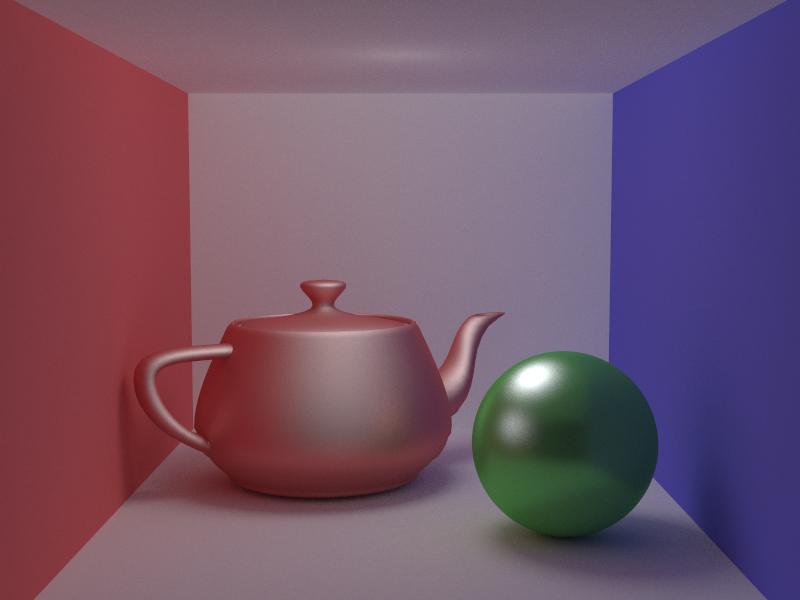
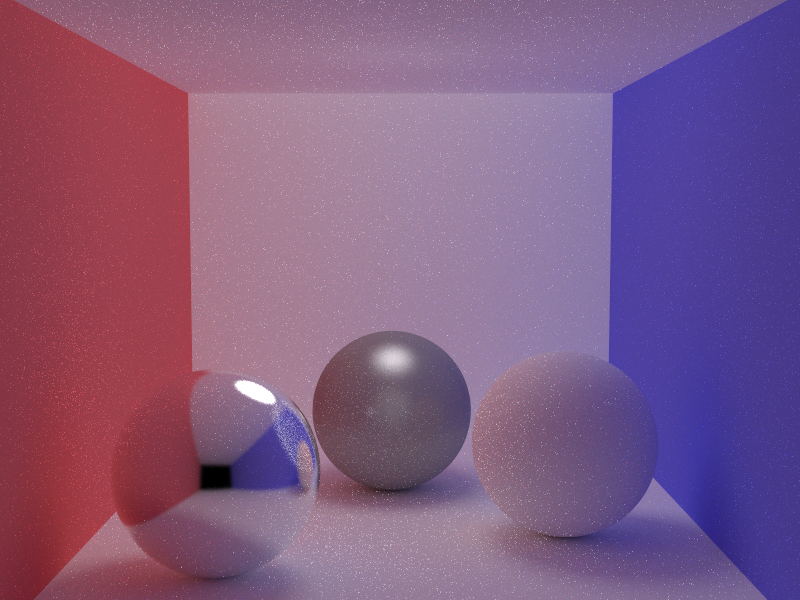
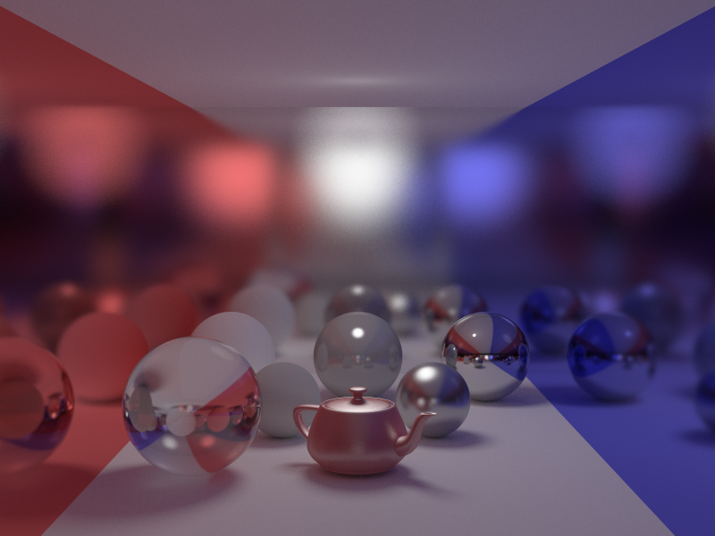
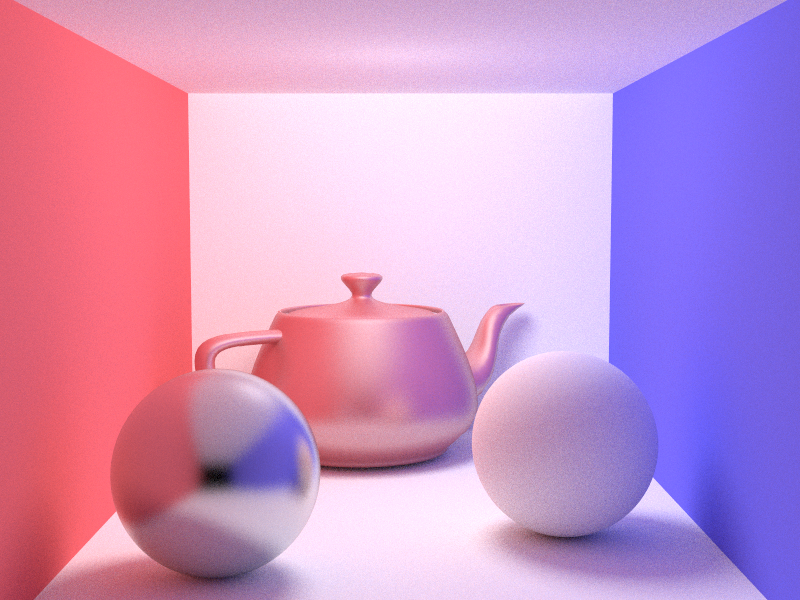
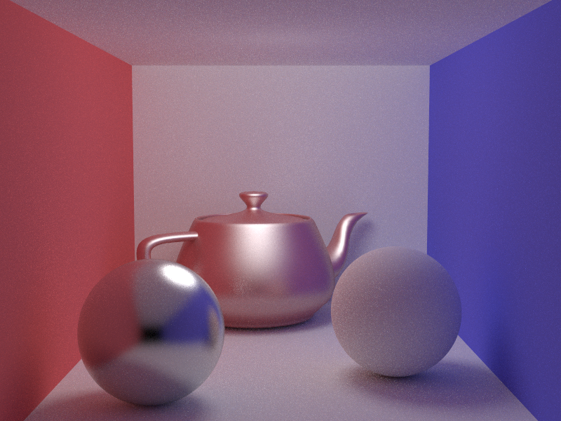

Time: ? Sample Per-pxel: 512 GI Bounce count: 5
Glossiness for the left sphere: 1500 Two point light with size of: 5 Time: ? Sample Per-pxel: 512 GI Bounce count: 10
Time: ? Sample Per-pxel: 1024 GI Bounce count: 10
Time: ? Sample Per-pxel: 128 GI Bounce count: 5
Time: ? Sample Per-pxel: 128 GI Bounce count: 5
